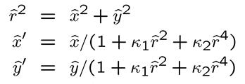
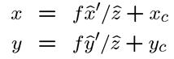
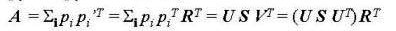
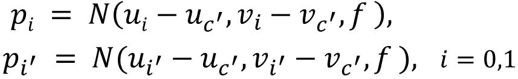
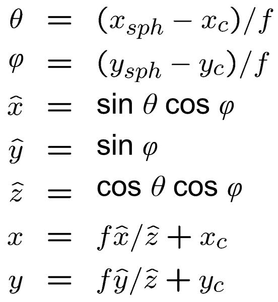
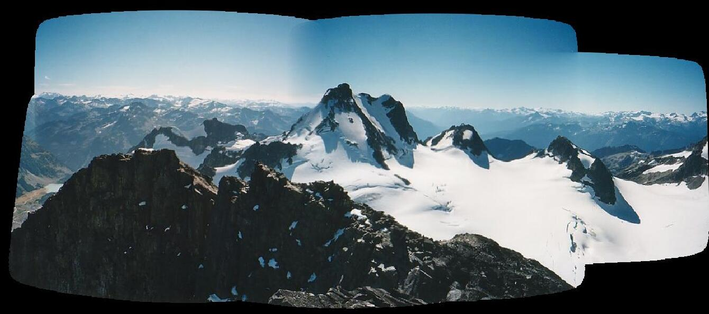
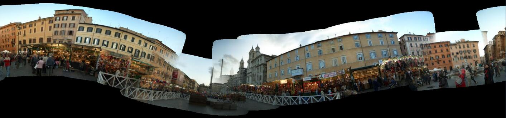
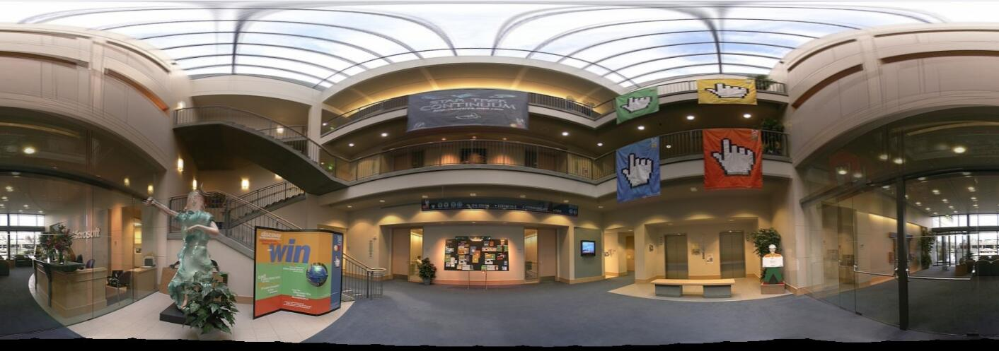

Name: Lin Huangjing Student ID: 1155072677
In this project, I utilize the technology based on computer vision to stitch the given images, and create a panorama view of it. The procedure can be divided into three parts: Correction of Radial Distortion , Global Alignment of Images and Blending Images.
This report is organized as follow: In Section 1, the outline of image stitching and report organization are introduced. In Section 2, I will introduce the details of the stitching methods and how these methods are implemented. In Section 3, the results of my project will be illustrated.
The main procedure of stitching are images alignment and blending. However, because of the inevitable distortion caused by camera, we should correct the radial distortion before the images being aligned. After then, in the alignment part, features are extracted and matched properly, which provide the useful information of feature matches for image stitching. Finally, based on the alignments created in the step 2, images are stitched one by one to create the final results.
2.1 Correction of Radial Distortion
To correct the radial distortion, I used a simple polynomial transformation proposed by mathematician Philipp Ludwig Von Seidel. As we know, the simplified model of radial distortion is:

we can get the corresponding transformation coordinates (x,y) in undistorted image is:

by implementing this model directly, I get the corrected results needed in the following steps.
(Ps: The code of this part is implemented in the file: WarpSpherical.cpp; routine: WarpRDField )
In this part, the stitching relationship and feature matches among images are determined. Firstly SIFT[1] is used as definition of features and Euclidean Distance is used as definition of feature distance. Before alignment of the images, I compare the feature arrays of images two by two, use a matrix to represent the combination among the images and find out which of them are fittest to stitch together.
Many feature matches are preserved after matching, but not all of them are accurate. Here, I selected accurate matches via RANdom SAmple Consensus[2] (RANSAC). This approach is implemented by calculating the least-square fit of features. The definition is as follow:


pi¡¯ and pi are two feature pairs. This is an iterative procedure and R is calculated by SVD. After that, we can get the number of accurate feature matches and marked them into a Matrix.
(Ps: The code of this part is implemented in the file: FeatureAlign.cpp; routines: alignImagePair, countInliers, and leastSquaresFit)
2.2.2 Calculating Global Alignment
By the RANSAC method in we define, I initial the Global Alignment among the images. And then transform all the images in a common plane. I stitch the images one by one via selecting the strongest match every time.
(Ps: The code of this part is implemented in the file: GlobalAlign.cpp; routine: initGlobalAlign)
2.3 Blending Images
In this part, we blend all the images by inverse mapping. The locations in panorama of each image pixel are calculated by a transformation. This transformation is defined as follow:

Calculating by this, we can get the transformed coordinates (x, y) in the panorama. And then blend images together and get the final results.
3.1 Mountains

The result is decent.
3.2 Piazzanavona

There exists some mis-matching problems to be solved.
The link of 360 degree panorama: Piazzanavona
3.3 Lobby

The link of 360 degree panorama: Lobby
[1] Richard Szeliski and Heung-Yeung Shum. Creating Full View Panoramic Image Mosaics and Environment Maps. SIGGRAPH97
[2] Brown, M. Hartley, R.I. Nister, D. Minimal Solutions for Panoramic Stitching. CVPR07